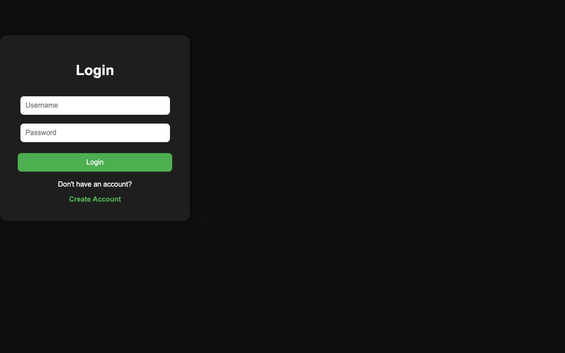

$ whoami CS student
3rd year CSE, Amrita School of Engineering, Bengaluru · class of 2028
open to SWE / ML internshipsI turn real-world problems into working software across AI/ML, full-stack and intelligent systems. Lately that's Find the Intruder, a log-forensics engine that rebuilds an attacker's kill chain, PotholeRisk, a Bayesian road-risk engine for Bengaluru, and AI-SDN Traffic, an ML-guided network controller.
- ▸ 9.12 CGPA B.Tech CSE
- ▸ 5th place Night Shift Startathon '25
- ▸ 4 apps deployed live
Selected Work
-
 Security · intrusion detection
Find the Intruder →
Can you find an attacker hidden in a thousand lines of normal logs?
23 tests in CI · zero dependencies · benign decoy never flagged
code ↗
Security · intrusion detection
Find the Intruder →
Can you find an attacker hidden in a thousand lines of normal logs?
23 tests in CI · zero dependencies · benign decoy never flagged
code ↗ -
 Full-stack · Bengaluru
PotholeRisk →
How risky is a Bengaluru road right now, given the weather, traffic and potholes?
Bayesian risk model · API keys kept server-side · on Render
code ↗
Full-stack · Bengaluru
PotholeRisk →
How risky is a Bengaluru road right now, given the weather, traffic and potholes?
Bayesian risk model · API keys kept server-side · on Render
code ↗ -

Deployed ML app Student Performance Predictor → Predicts final scores from attendance, study hours, internals and assignments. model → app → deploy · hashed-password auth · Plotly dashboards code ↗ -
 Web · virtual museum
Heritage Explorer →
Five of India's best-known museums, with galleries and ticket booking, in one place.
5 museums, themed per museum · responsive · dark mode
code ↗
Web · virtual museum
Heritage Explorer →
Five of India's best-known museums, with galleries and ticket booking, in one place.
5 museums, themed per museum · responsive · dark mode
code ↗
ML · networking
AI-SDN Traffic ↗Does an ML-guided controller beat static routing on the same network and traffic?
~99.7% flow classification · ~15% lower latency · ~39% lower peak load · 23 → 0 congested flows
Big-data research · in progress
Startup Survival × News Sentiment ↗Does news sentiment predict startup survival better than funding data alone?
2×2 experiment on Scala, Spark and MLlib · only results from real runs
Now
what's on my plate this semester
Building
- Startup Survival × News Sentiment, a Scala + Spark pipeline
Learning
- LLM agents, with LangGraph
- Distributed data, Spark and Hive
- Event-driven backends, Kafka
Next
- CV pothole detection, for PotholeRisk
- Route safety scoring, for PotholeRisk
Open to
- SWE / ML internships
- Hackathon teams
- Open-source collaborations
- Software Engineering Job SimulationJPMorgan Chase & Co. · Forage. Kafka, H2 persistence and a REST API controller
- Generative AI in ActionIBM SkillsBuild. LLMs and retrieval-augmented generation
- PythonKaggle
- 5th place, The Night Shift StartathonACE & AMAL Club, Amrita
- Started B.Tech CSEAmrita School of Engineering, Bengaluru · CGPA 9.12
- High School, Computer ScienceThe Amaatra Academy · 90.4%
Stack
languages
PythonJavaCJavaScriptSQLScala
ai / ml
scikit-learnLangChainLangGraphLlamaIndexOllamavLLMGradioStreamlitW&B
backend & data
FlaskNode.jsExpressSpring BootKafkaSparkMySQLSQLite
web & tools
ReactHTML / CSSGitPostmanRenderVercelClaude CodeMCP
Activity
GitHub contributions, live
loading…
Contact
email is the fastest way to reach me
Open to SWE / ML internships.
// here are my socials